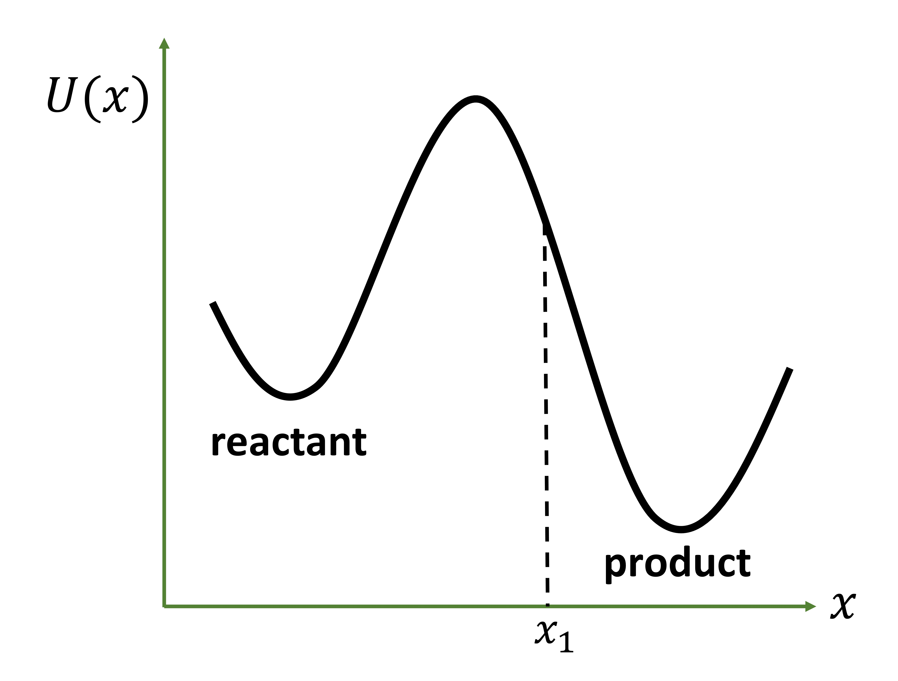

Kramers rate theory models chemical reactions in solvents using Langevin equations. The results for the complete problem under different friction limits can be found elsewhere.$^{1,2}$ Here we will consider the much more simpler one dimensional escape problem in the high friction limit. The problem concerns the rate of escape of trajectories from a reactant basin to the product basin over a high free-energy barrier. The product basin is irreversibly absorbing. The trajectory once absorbed is replaced back in the reactant basin. Trajectories thermalize quickly in the reactant basin and a rare fluctuation moves the system over the barrier. A schematic for the potential energy surface is shown in figure 1. The absorbing region is defined by $x\geq x_1$.  The rescue and replace conditions described above maintain a non-equilbrium probability density in the reactant basin. The probability density is non-equilibrium in this construction as true thermal equilibium imparts some finite probability density to the regions described as "absorbing" (and absorbing region by definition has zero probability density). Hence, the system has a time invariant probability density $\rho(x)$ which is different from the equlibrium density $\rho_{eq}(x)$.
We start from the one dimensional Smoluchowski equation as done by Hanggi et. al.(see section 4E)$^3$ $$ \frac{\partial\rho(x,t)}{\partial t}=\frac{\partial}{\partial x}\Big[e^{-\beta U(x)}D\frac{\partial} {\partial x}\big(e^{\beta U(x)}\rho(x,t)\big)\Big] $$
We can also use the continuity equation to yield $$ \frac{\partial\rho(x,t)}{\partial t}=-\nabla.\vec{\textbf{J}} $$ The cycles of rescue and replace maintain a steady state $\rho(x)$ and thus the left hand side of the above two equations is zero. This implies that the flux is constant and given by $$ e^{-\beta U(x)}D\frac{\partial} {\partial x}\big(e^{\beta U(x)}\rho(x,t)\big)=-J $$ Now we rearrange the above equation and integrate as follows $$ e^{\beta U(x_1)}\rho(x_1)-e^{\beta U(x)}\rho(x)=-\frac{J}{D}\int_{x}^{x_1} dx' \ e^{\beta U(x')} $$ $x_1$ corresponds to the start of the absorbing region and hence $\rho(x_1)=0$. Thus, the above equation simplifies to $$ \rho(x)=e^{-\beta U(x)}J/D\int_{x}^{x_1} dx' \ e^{\beta U(x')} $$ At any given time the constant number of reactant species ($N_0$) is $$ N_0=\int_{-\infty}^{x_1} dx' \rho(x') $$
From equations 5 and 6 it then follows that $$ N_0=\int_{-\infty}^{x_1} dx' e^{-\beta U(x')}\frac{J}{D} \int_{x'}^{x_1} dx'' \ e^{\beta U(x'')} $$ The above equation can be rewritten first by using the heavy side function and then interchanging the integrals $$ N_0/J=\frac{1}{D}\int_{-\infty}^{x_1} dx' e^{-\beta U(x')} \int_{-\infty}^{x_1}dx'' \ e^{\beta U(x'')}\Theta(x''-x') \\ =\frac{1}{D}\int_{-\infty}^{x_1} dx'' e^{\beta U(x'')} \int_{-\infty}^{x_1}dx' \ e^{-\beta U(x')}\Theta(x''-x') $$ where the second integral is non-zero for $x''>x'$ which implies $$ N_0/J=\frac{1}{D}\int_{-\infty}^{x_1} dx'' e^{\beta U(x'')} \int_{-\infty}^{x''}dx' \ e^{-\beta U(x')} $$
Now we consider relating the quantity on the L.H.S to the rate constant $k$. The survival probability ($S(t)$) associated with a reactant species can be calculated using the following procedure. Starting from $t=0$ and $S(0)=1$ the probability that the reactant species survives an escape in the next $\Delta t$ is given by this Taylor expansion $$ S(0+\Delta t)=S(0)-k\Delta t=1-k\Delta t $$ We then have $S(2\Delta t)=S(\Delta t)S(\Delta t)=(1-k\Delta t)^2$. In other words, survival probability after two time intervals is equal to the probability that the reactant species survives an escape in one time interval followed by another survival in the subsequent interval. This can be generalised to $S(n\Delta t)=(1-k\Delta t)^n$. For the limit $n \rightarrow \infty$ and $t=n\Delta t$ leads to a wonderful result $S(t)=\exp(-kt)$. This follows from using the mathematical relation $$ \lim_{n \rightarrow \infty}\big(1+\frac{x}{n}\big)^n=e^x $$
An interesting aside: This limit also explains why a continuous compounding on a principal $P$ with a fixed annual rate of interest $r\%$ maximises the return at the end of the year to the value $P e^{r/100}$.
The time derivative of the survival probability is the per particle flux and is given by $$ \frac{J}{N_0}=-\frac{\partial S}{\partial t}=ke^{-kt} $$ Clearly, $J$ decreases with the decrease in the instantaneous number of the reactant species ($N(t)=N_0e^{-kt}$). However, the rescue and replace conditions maintain the total number of reactant species at any instant to be $N_0$. Thus using $t \rightarrow 0$ for the above result yields $J/N_0=k$. Using this in equation 9 we get $$ 1/k=\frac{1}{D}\int_{-\infty}^{x_1} dx'' e^{\beta U(x'')} \int_{-\infty}^{x''}dx' \ e^{-\beta U(x')} $$ which is the general form of the Kramers result in the high friction limit. We can now make an approximation about the potential energy surface being parabolic at the minimum of the reactant A and at the barrier top $$ U_{min}(x)=\frac{1}{2}m \omega_A^2 (x-x_0)^2 \\ U_{max}(x)=U_{\ddagger}-\frac{1}{2}m \omega_{\ddagger}^2 (x-x_{\ddagger})^2 $$ The exponential in the first integral of equation 13 has a maximum value at the barrier top. The exponential in the second integral has a maximum value at the minima of the A well. Thus, we now approximate the integrals to be two Gaussians centered at $x_0$ and $x_{\ddagger}$. Using $D=k_BT/m\gamma$ yields $$ k^{high\ \gamma}_{K}=\frac{\omega_A \omega_{\ddagger}}{2\pi\gamma}e^{-\beta U_{\ddagger}} $$
1. Peters, B. Reaction rate theory and rare events. Elsevier, 2017.
2. Zwanzig, R. Nonequilibrium statistical mechanics. Oxford University Press, 2001.
3. Hänggi, P., Talkner, P. and Borkovec, M. Rev. Mod. Phys. 62(2), 1990. Link